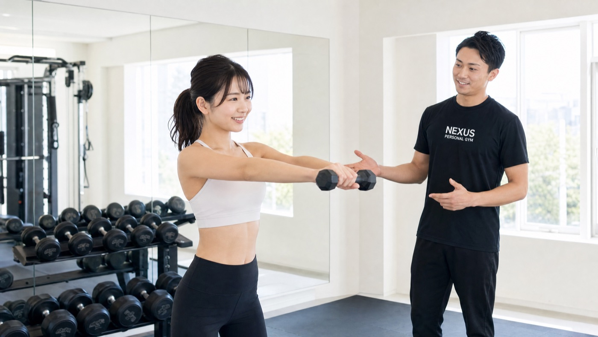
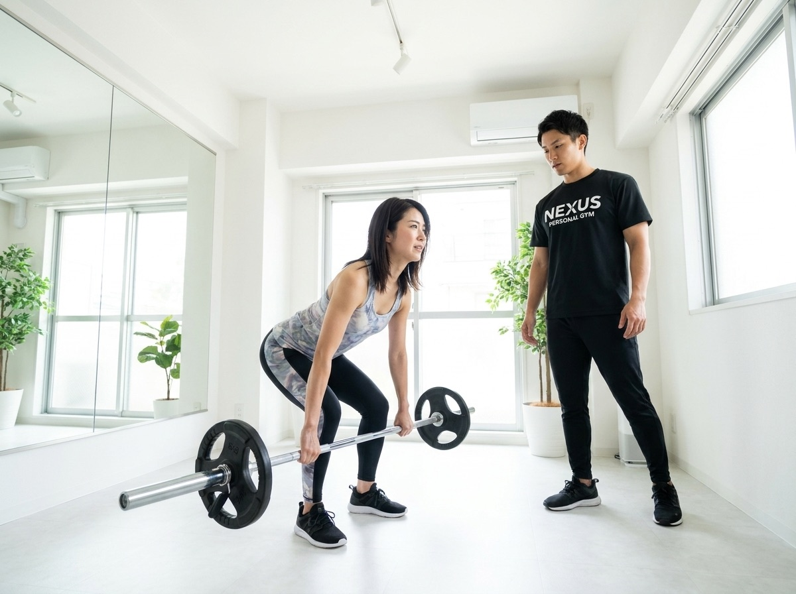
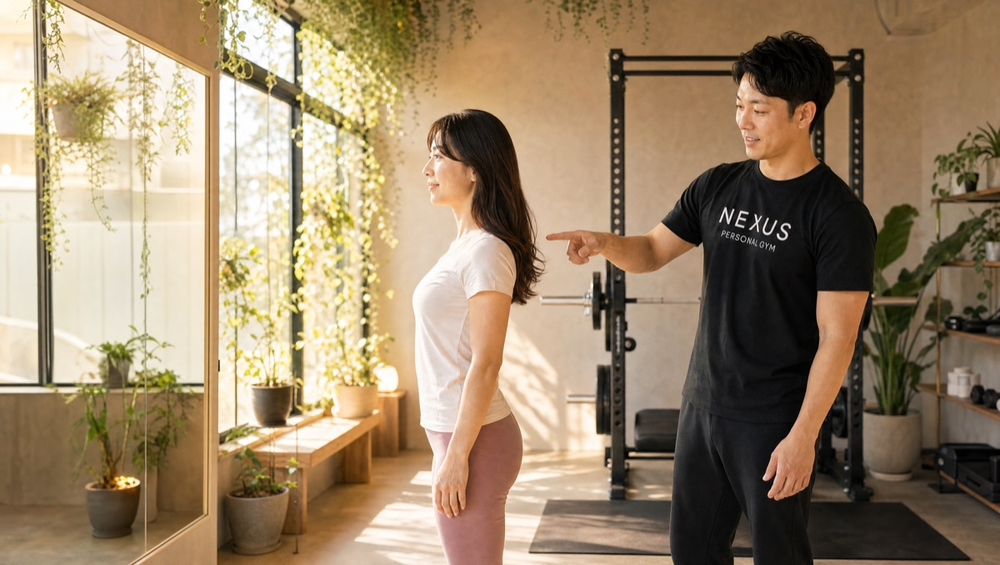
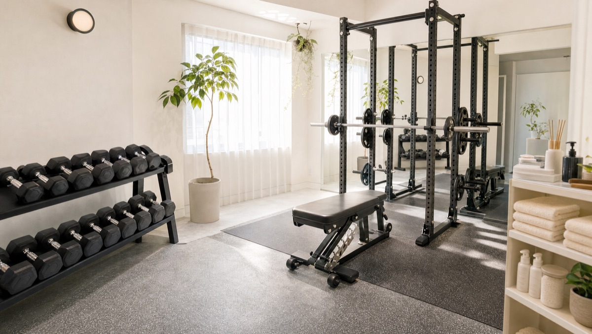
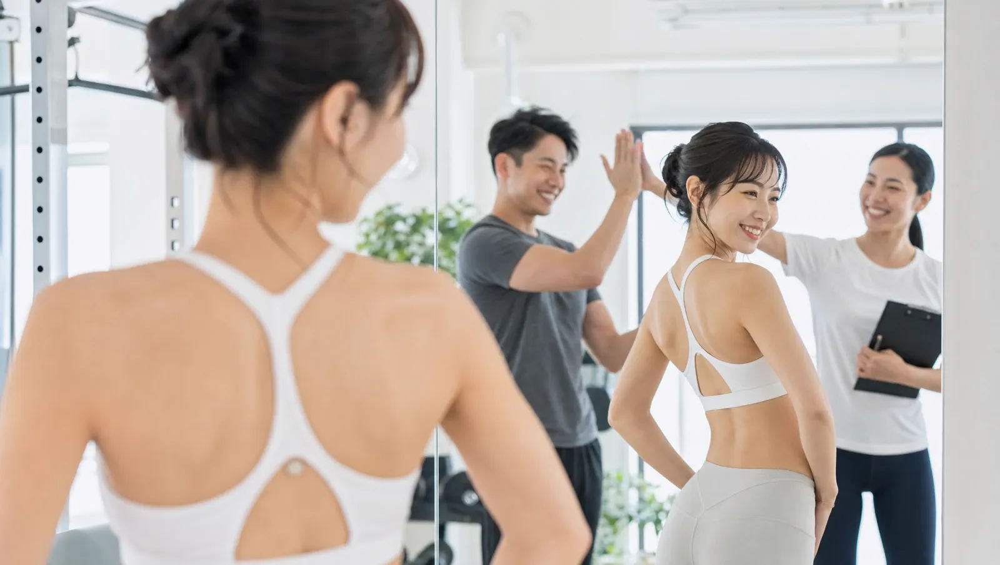

NEXUS Personal Gym ／ 群馬県太田市
NEXUSパーソナルジム 太田店｜群馬県に初上陸した完全個室ジム

群馬県太田市本町、東武伊勢崎線・太田駅から徒歩圏にある完全個室パーソナルジムです。NEXUSにとって、太田店は群馬県への初出店。これまで東京都内・神奈川を中心に全国約70店舗を展開してきたNEXUSが、いよいよ群馬に上陸しました。ここは、精密なものづくりで日本を支えてきた街・太田。「精密なものづくりの街に、精密な身体づくりを」——製造業や現場仕事で立ち仕事が続く方の腰や肩のケア、体力維持にもしっかり向き合います。太田・伊勢崎・足利エリアから駅前立地で通いやすく、完全個室で担当トレーナーと二人だけだから、人目を気にせず集中できます。ウェア・タオル・ドリンク・プロテインまで全部込みのアメニティ完備で、手ぶら通いOK。毎日8:00〜23:00・LINE予約で、無理なく続けられます。挙式日から逆算する結婚式前のブライダルボディメイクにも対応しています。
※東京都大田区ではなく、群馬県太田市の店舗です。
- ブライダル対応
- 完全個室
- 群馬県初出店
- 太田駅 徒歩圏
- 都内70店で実証済み
- 立ち仕事の腰肩ケア
- 手ぶらOK
この店舗の特徴
NEXUS太田店は、群馬県太田市本町にある完全個室パーソナルジム。東武伊勢崎線・太田駅から徒歩圏という好立地です（東京都大田区ではなく、群馬県太田市です）。この店舗の最大の特徴は、NEXUSにとって「群馬県への初出店」であること。これまで東京都内・神奈川エリアを中心に全国約70店舗を展開してきたNEXUSが、ものづくりの街・太田に初めて根を下ろした一軒です。「群馬で完全個室のパーソナルジムを探していた」「都内まで出ずに、地元で本格的な指導を受けたい」——そんな方にこそ通っていただきたい店舗です。群馬県初の店舗ながら、ご提供するのは都内約70店で実証済みのメソッドそのもの。完全個室のマンツーマンだから、人目を気にせず自分のペースで進められます。予約はLINEでサッと完結。群馬に上陸したNEXUSで、続けられる身体づくりを始めてみませんか。
ものづくりの街に、身体づくりの専門店を

太田は、精密なものづくりで日本を支えてきた街です。一台の製品が、無数の正確な工程の積み重ねで完成するように、身体づくりもまた、その人の体に合わせた正確な設計と積み重ねで結果が出ます。太田店がご提供するのは、まったく新しい方法ではなく、都内・神奈川の系列約70店舗で長く磨かれてきた指導メソッドそのものです。全トレーナーが3ヶ月の厳しい自社教育プログラムを修了してからデビューし、太田店にも同じ教育を受けたトレーナーが在籍しています。系列店では、月島店が★5.0（172件）、練馬店が★5.0（95件）という、地域で長く支持される高い評価をいただいています（2026年7月時点）。「群馬だから」「新しい店舗だから」と妥協する必要はありません。あなたの体の状態を丁寧に見極め、目的から逆算した“精密な”プランを、地元・太田で受けられます。
立ち仕事・現場仕事の、腰と肩に

製造業や現場仕事の多い太田では、一日中立ちっぱなし・同じ姿勢の繰り返しで、腰や肩・首のこわばりに悩む方が少なくありません。「マッサージに行っても、数日で元に戻る」——それは、痛みの原因になっている姿勢のクセや、体を支える筋力そのものが変わっていないからです。太田店では、いきなり追い込むのではなく、まず姿勢と体の使い方のチェックから始めます。腰や肩に負担をかけている動きの偏りを整え、体幹や股関節まわりの“支える筋肉”を、その日のコンディションに合わせて少しずつ鍛えていきます。完全個室のマンツーマンで、体に不必要に触れないノータッチ指導が基本なので、運動が久しぶりの方や、体を痛めた経験のある方も安心です。仕事のパフォーマンスを落とさない身体づくり、疲れにくい毎日のための土台づくり——現場で働く男女の“資本である身体”を、専門家と一緒に整えていきましょう。
オープン直後の、今だけの通いやすさ

パーソナルジム選びで意外と見落とされがちなのが、「予約の取りやすさ」です。人気店では、仕事帰りの夜や休日の日中といった通いやすい時間帯ほど枠が埋まりやすく、「行きたい時間に予約できない」というストレスが続くと、通うこと自体が億劫になってしまいます。太田店はオープンしたばかり。だからこそ今は、希望の曜日・時間帯をゆとりを持って確保しやすいタイミングです。日勤・夜勤で生活リズムが変わりやすい方も、シフトに合わせて予約を組みやすい今が狙い目です。毎日8:00〜23:00の営業なので、早朝のひと汗から夜遅めの一本まで幅広く対応。予約・変更はLINEから完結し、6時間前まで無料でキャンセル・変更が可能です。「始めるなら、通いやすい今のうちに」——群馬に初上陸したNEXUSを、いちばん動きやすいこのタイミングで体感してください。
東武伊勢崎線・太田駅からの動線
太田店は、東武伊勢崎線・太田駅から徒歩圏の太田市本町にあります。太田駅は特急「りょうもう」も停車する北関東の主要駅で、伊勢崎・館林・足利方面からの電車でのアクセスも良好です。群馬は車社会ですが、太田店は駅前立地なので、通勤の行き帰りや買い物のついでに立ち寄りやすいのが強みです。もちろんお車でお越しの方にも、市街地中心部でアクセスしやすい場所です。「わざわざジムのためだけに遠出する」のではなく、日々の生活動線の延長で通えるからこそ、トレーニングは習慣として続きます。ウェア・水・タオル・プロテインまですべて無料でご用意しているので、仕事帰りのそのままの姿で手ぶらで立ち寄れます。太田・伊勢崎・足利エリアで「地元にはない完全個室ジムに、無理なく通いたい」という方に、生活圏の一軒としてご利用いただけます。まずは無料体験で、通いやすさを確かめてみてください。
Price料金プラン
入会金は通常55,000円、無料体験当日入会で15,000円（税込）に割引。AI食事指導は月額3,000円（税込）。全店舗共通の料金です。
Bridal Body-make結婚式まで、最高の自分をつくる群馬・太田店のブライダルボディメイク
太田店では、挙式日から逆算した結婚式前のボディメイクに力を入れています。ドレスで視線が集まる背中・二の腕・デコルテ・ウエストを、完全個室のマンツーマンで整えます。会員の約85%が女性。体に不必要に触れないノータッチ指導を基本にしているので、はじめての方も安心してトレーニングに集中できます。悩みから当日、そしてその先まで——挙式に向かう物語に、太田店が伴走します。




「ドレスの試着で二の腕が気になった」「背中の開いたデザインを、体型を理由に諦めたくない」——挙式という動かせない期日があるからこそ、ボディメイクは最後までやり切れます。太田店では、まず挙式日とドレスのデザインをうかがい、挙式日から逆算した120日プラン・90日プランで「いつまでに、どの部位を、どこまで」を最初に設計します。残された日数が少なくても、部位を絞って集中的に取り組めば体のラインは十分に変えられます。極端な食事制限で当日フラフラ……ということがないよう、その日のコンディションから逆算する無理のない指導で、式当日にピークを合わせます。目標が数字ではなく“当日の自分の姿”だからこそ、「このデザインで大丈夫かな」から「このドレスを選んでよかった」へと、モチベーションが途切れません。
太田・伊勢崎・足利エリアで挙式を予定されている方に。車社会の群馬でも、太田店は駅前立地で通いやすく、お車でも市街地中心部でアクセスしやすい場所です。準備で慌ただしい時期でも、仕事や打ち合わせの帰りに、生活動線のなかへ無理なくトレーニングを組み込めます。
挙式120日前に入会し、週1〜2回のペースで通いました。背中の開いたドレスに合わせて、二の腕と背中を中心にプランを組んでもらい、途中のドレス試着ではっきりサイズダウンを実感。当日は、最高のコンディションでバージンロードを歩けました。式後もそのまま通っています。
上記はサービス内容をわかりやすく伝えるためのモデルケース（イメージ）であり、実在するお客様の口コミではありません。太田店はオープンしたばかりのため、現在Google口コミを収集中です。
そして、挙式はゴールではなく新しい生活のスタートでもあります。せっかく作り上げた身体を、そのまま新生活の習慣に。太田店は毎日8:00〜23:00営業・月4回18,000円（1回4,500円〜）から続けられるので、挙式後の体型維持から、産後のボディメイクまで、人生の節目に長く伴走します。全国約70店舗のネットワークがあるため、引っ越しや里帰りの際も最寄り店舗へ。「一生に一度」のために始めた習慣が、その後の人生を支える土台になります。
挙式日からの逆算タイムライン｜ブライダル専用ページを見るReviewsNEXUSブランドの実績
NEXUS太田店は群馬県初のNEXUS店舗。オープンしたばかりのため、地元・太田での口コミはこれから収集してまいります。太田店が土台とするのは、全国約70店舗で積み上げてきたNEXUSブランドの実績です。会員継続率96%、そして首都圏の系列店で数多くの高評価をいただいてきた「完全個室×手ぶらOK」のメソッドが、そのまま太田で受けられます。
NEXUSは全国約70店舗・会員継続率96%。都内系列の月島店が★5.0（172件）、練馬店が★5.0（95件）という評価をいただいており、ブランドとしての指導品質は各店で共有されています（2026年7月時点）。太田店でも、同じ基準の教育を受けたトレーナーが、同じメソッドで指導します。実際に通われた方の声は、これから太田店のGoogleマップにも少しずつ増えていきます。ご来店の際は、ぜひ体験の感想をお寄せください。
太田店の口コミをGoogleマップで見るアクセス
- 店舗名
- NEXUSパーソナルジム 太田店
- 住所
- 〒373-0057
群馬県太田市本町20-11 ハウズマンション101 - 最寄り駅
- 東武伊勢崎線 太田駅（徒歩圏）
- 営業時間
- 毎日 8:00〜23:00
- 電話番号
- 050-1790-8499
太田店のよくある質問
Q群馬県太田市にパーソナルジムはありますか？+
Q群馬に他のNEXUS店舗はありますか？+
Q立ち仕事で腰痛があります。トレーニングできますか？+
Qブライダルエステとパーソナルジムはどう違いますか？+
Q結婚式の準備で忙しいのですが、キャンセルはいつまで可能ですか？+
Q挙式後や産後も通い続けられますか？+
よくある質問（全店共通）
料金・制度などNEXUS全店に共通するご質問です。さらに詳しくは110問のFAQをご覧ください。
Q料金はいくらですか？+
Q手ぶらで通えますか？+
Qキャンセルはいつまでできますか？+
Q食事指導はありますか？+
Qトレーナーはどんな人ですか？+
Q女性会員は多いですか？+
Q体験の流れは？+
NEXUSパーソナルジムの特徴・料金をもっと見る